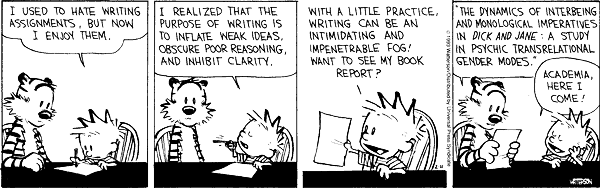

|
MATH 301
Exploration & Proof
Fall 2006
Term Paper
|
 |
 |
The term paper is a project you will be working on throughout the semester. The topic is up to you but needs to be checked with me. Topics could be anything from the history of a mathematical concept to subjects that go beyond the lecture notes. I expect that you will have found a topic by the end of September. A first, possibly incomplete, draft is due on October 27. You will correct each other's drafts; the corrections are due on November 10. The final version of your paper is due on December 15, the last day of classes. As with your homework, you may hand in your paper early to be able to get feedback from me.
Here is a list of possible topics, but you should feel free to come up with your own ideas. The references are meant to provide starting points for your research.
- Russell's paradox: Expand on Project 4.3 in the lecture notes.
- Project 12.9: Axiom systems different from those in the lecture notes (E. Landau, Foundations of Analysis, Chelsea, 2001).
- Irrationality of pi and e (T. Nagell, Introduction to number theory, American Mathematical Society, 2001, Section 13; J. Sondow, American Mathematical Monthly 113 (2006), pp. 637-641).
- Reasoning and fallacies in fundamental mathematics taught in elementary school (L. Ma, Knowing and teaching elementary mathematics).
- Incorporating elementary number theory in the classroom (O. E. Nicodemi et al, Abstract Algebra, Prentice Hall, 2006, "To the teacher" notes in Chapter 1).
- How to define fractions in grade school (R. McCrory, Mathematicians and mathematics
textbooks for prospective elementary teachers, Notices of the AMS, 53 (2006), pp. 20-29)
- Learning and teaching proofs (G. Harel & L. Sowder, Toward comprehensive perspectives on the learning and teaching of proof; G. Hanna, Proofs that prove and proofs that explain. In: G. Vergnaud, J. Rogalski, and M. Artigue (Eds.), Proceedings of the 13th Meeting of the International Group for the Psychology of Mathematics Education (pp. 45-51), PME, 1989)
- Conjectures (S. I. Brown & M. I. Walter, The art of problem posing (second edition), Lawrence Erlbaum, 1990)
- Peano's Axioms (H. C. Kennedy, Selected Works Of Giuseppe Peano, University of Toronto Press, 1973).
- Quaternions (F. Klein, Elementary mathematics from an advanced standpoint, The Macmillan Company, 1939).
- History of number systems (H.-D. Ebbinghaus et al, Numbers, Springer-Verlag, 1990; B. Mazur, Imagining numbers, Farrar, Straus, and Giroux, 2003).
- History of certain numbers, e.g., 0 (C. Seife, Zero, Viking, 2000), e (E. Maor, e: The story of a number, Princeton University Press, 1994).
"Philosophy is written in this grand book--I mean the universe--which stands continually open to our glaze, but it cannot be understood unless one first learns to comprehend the language and interpret the characters in which it is written. It is written in the language of mathematics, and its characters are triangles, circles, and other geometric figures, without which it is humanly impossible to understand a single word of it."
Galileo Galilei (Il Saggiatore, 1623)
more pearls of wisdom